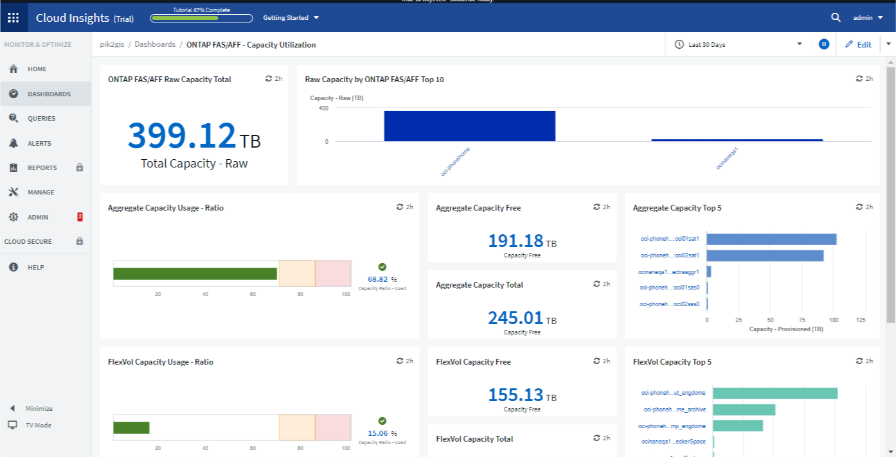
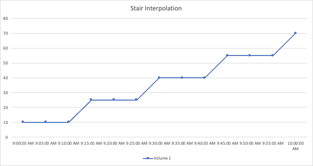
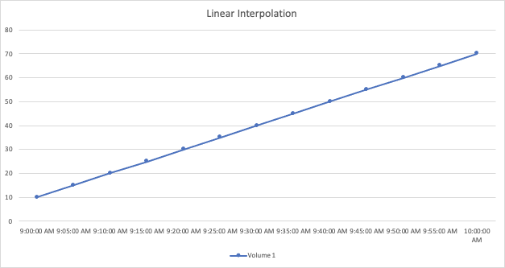

要求變更文件
要求變更文件 編輯此頁面
編輯此頁面 瞭解如何作出貢獻
瞭解如何作出貢獻儀表板功能
儀表板和小工具可讓您靈活運用資料的顯示方式。以下是一些概念、可協助您充分發揮自訂儀表板的效益。
Widget命名
Widget會根據第一個Widget查詢所選的物件、度量或屬性自動命名。如果您也選擇Widget的群組、則「Group By」（群組依據）屬性會包含在自動命名中（集合方法和度量）。

選取新的物件或群組屬性會更新自動名稱。
如果您不想使用自動小工具名稱、只要輸入新名稱即可。
小工具放置與大小
所有儀表板小工具均可根據您對每個特定儀表板的需求進行定位和調整規模。
複製小工具
在儀表板編輯模式中、按一下小工具上的功能表、然後選取*複製*。Widget編輯器隨即啟動、並預先填入原始Widget的組態、並在Widget名稱中加上「copy」字尾。您可以輕鬆進行任何必要的變更、並儲存新的小工具。小工具會放置在儀表板底部、您可以視需要加以定位。請記得在完成所有變更時儲存儀表板。

顯示Widget圖例
儀表板上的大多數小工具都可以顯示、也可以不顯示圖例。小工具中的圖例可透過下列任一方法在儀表板上開啟或關閉：
-
顯示儀表板時、按一下小工具上的*選項*按鈕、然後在功能表中選取*顯示圖例*。
當Widget中顯示的資料變更時、該Widget的圖例會動態更新。
顯示圖例時、如果可以瀏覽圖例所示資產的登陸頁面、則圖例會顯示為該資產頁面的連結。如果圖例顯示「ALL」、按一下連結會顯示對應於Widget中第一個查詢的查詢頁面。
轉型指標
針對小工具中的某些指標提供不同的*轉換*選項（特別是稱為「自訂」或「整合指標」的指標、例如Kubernetes、《進階資料》、「電話介面」外掛程式等）、讓您以多種方式顯示資料。Cloud Insights ONTAP將可轉型的度量新增至小工具時、系統會顯示下拉式清單、提供下列轉換選項：
- 無
-
資料會顯示為「現用」、不會有任何操作。
- 費率
-
目前值除以上次觀察後的時間範圍。
- 累計
-
先前值和目前值總和的累積。
- 差異
-
先前觀察值與目前值之間的差異。
- 差異率
-
差異值除以上次觀察後的時間範圍。
- 累計率
-
累計值除以上次觀察後的時間範圍。
請注意、轉換指標並不會變更基礎資料本身、只會變更資料的顯示方式。
儀表板Widget查詢與篩選器
查詢
儀表板中的查詢小工具是管理資料顯示的強大工具。以下是小工具查詢的一些注意事項。
部分小工具最多可有五個查詢。每個查詢都會在Widget中繪製自己的一組行或圖表。在一個查詢上設定彙總、群組、上/下結果等、不會影響該Widget的任何其他查詢。
您可以按一下眼圖示、暫時隱藏查詢。當您隱藏或顯示查詢時、Widget會自動顯示更新。這可讓您在建立小工具時、檢查所顯示的個別查詢資料。
下列Widget類型可以有多個查詢：
-
區域圖
-
堆疊區域圖
-
折線圖
-
不規則曲線圖
-
單一值小工具
其餘的Widget類型只能有一個查詢：
-
表
-
長條圖
-
方塊繪圖
-
散佈繪圖
在儀表板Widget查詢中篩選
以下是您可以充分發揮篩選功能的一些方法。
完全符合篩選
如果您以雙引號括住篩選字串、Insight會將第一個和最後一個報價之間的所有內容視為完全相符。報價內的任何特殊字元或運算子都將視為文字。例如、篩選「*」會傳回文字星號的結果；在此情況下、星號不會視為萬用字元。在雙引號中加上運算子AND、OR和Not時、也會被視為字串。
您可以使用完全相符的篩選器來尋找特定資源、例如主機名稱。如果您只想尋找主機名稱「行銷」、但不想要「行銷01」、「行銷波士頓」等、只要將名稱「行銷」括在雙引號內即可。
萬用字元和運算式
當您在查詢或儀表板小工具中篩選文字或清單值時、在您開始輸入時、系統會顯示根據目前文字建立*萬用字元篩選器*的選項。選取此選項會傳回符合萬用字元運算式的所有結果。您也可以使用Not or或建立* Expressions *、或是選取「無」選項來篩選欄位中的null值。

根據萬用字元或運算式（例如 「Not」（不）、或「None」（無）等）會在篩選欄位中以深藍色顯示。您直接從清單中選取的項目會以淺藍色顯示。

請注意、萬用字元與運算式篩選功能可搭配文字或清單使用、但不能搭配數值、日期或布爾值使用。
進階文字篩選搭配內容前置類型建議
在小工具查詢中篩選為「內容相關」；當您選取欄位的篩選值時、該查詢的其他篩選器會顯示與該篩選器相關的值。例如、為特定物件_Name_設定篩選時、要篩選_Model_的欄位只會顯示與該物件名稱相關的值。
內容相關篩選也適用於儀表板頁面變數（僅限文字類型屬性或註釋）。當您為某個變數選取檔案管理器值時、使用相關物件的任何其他變數只會根據相關變數的內容顯示可能的篩選值。
請注意、只有「文字」篩選器會顯示上下文預先輸入的建議。日期、列舉（清單）等不會顯示預先輸入的建議。也就是說、您可以在「Enum（即清單）」欄位上設定篩選條件、並在關聯中篩選其他文字欄位。例如、在「Enum」欄位中選取一個值、例如「Data Center」（資料中心）、其他篩選器則只會顯示該資料中心的機型/名稱）、反之亦然。
選取的時間範圍也會提供篩選器中所顯示資料的內容。
選擇篩選單位
在篩選欄位中輸入值時、您可以選取要在圖表上顯示值的單位。例如、您可以根據原始容量篩選、並選擇以drafult GiB顯示、或是選擇其他格式、例如TiB。如果您的儀表板上有許多圖表顯示TiB的值、而且您希望所有圖表顯示一致的值、則此功能非常實用。

其他篩選改良功能
下列項目可用於進一步精簡篩選條件。
-
星號可讓您搜尋所有內容。例如、
vol*rhel
顯示以「vol」開頭並以「RHEL」結尾的所有資源。
-
問號可讓您搜尋特定的字元數。例如、
BOS-PRD??-S12
顯示_BOS-PRD12-S12_、_BOS-PRD13-S12_等。
-
或運算子可讓您指定多個實體。例如、
FAS2240 OR CX600 OR FAS3270
尋找多種儲存模式。
-
Not運算子可讓您從搜尋結果中排除文字。例如、
NOT EMC*
尋找開頭不是「EMC」的所有項目。您可以使用
NOT *
顯示無值的欄位。
識別查詢和篩選器傳回的物件
查詢和篩選所傳回的物件看起來類似下圖所示。指派「標記」的物件為附註、而不含標籤的物件則為效能計數器或物件屬性。

群組與集合
群組（向上捲動）
Widget中顯示的資料會從擷取期間收集的基礎資料點進行分組（有時稱為「聚集」）。例如、如果您有一個折線圖小工具顯示一段時間內的儲存IOPS、您可能會想要查看每個資料中心的獨立折線、以便快速比較。您可以選擇以下列其中一種方式將此資料分組：
-
平均：將每一行顯示為基礎資料的平均_。
-
最大：將每一行顯示為基礎資料的_maximum。
-
最小：將每一行顯示為基礎資料的_minimum_。
-
* Sum *：將每一行顯示為基礎資料的_sum_。
-
* Count*：顯示已在指定時間範圍內報告資料的物件_count_。您可以選擇由儀表板時間範圍（或是設為覆寫儀表板時間的Widget時間範圍）或您選取的_自訂時間範圍_決定的整個時間範圍_。
若要設定群組方法、請執行下列步驟。
-
在您的小工具查詢中、選擇資產類型、度量（例如_Storage_）和度量（例如_Performance IOPS Total）。
-
對於* Group*、請選擇彙總方法（例如_average）、然後選取要彙總資料的屬性或度量（例如、Data Center）。
小工具會自動更新並顯示每個資料中心的資料。
您也可以選擇將基礎資料的_all_群組到圖表或表格中。在此案例中、您會在Widget中取得每個查詢的單一行、其中會顯示所有基礎資產的所選度量或度量的平均值、最小值、最大值、總和或計數。
按一下任何以「All（全部）」群組資料的Widget圖例、即可開啟查詢頁面、顯示Widget中使用的第一個查詢結果。
如果您已設定查詢的篩選條件、則會根據篩選的資料來分組資料。
請注意、當您選擇依任何欄位（例如_Model_）將小工具分組時、仍需要依該欄位篩選、才能在圖表或表格中正確顯示該欄位的資料。
彙總資料
您可以將資料點彙總成分鐘、小時或日等時段、以便進一步調整時間序列圖（折線、區域等）、然後再依屬性（若已選擇）彙總資料。您可以根據平均、最大、最小、Sum或_Count_來選擇集合資料點。
如果時間間隔較短、加上較長的時間範圍、可能會導致「集合時間間隔導致太多資料點」警告。如果時間間隔較短、而且儀表板時間範圍增加至7天、您可能會看到這一點。在這種情況下、Insight會暫時增加集合時間間隔、直到您選取較短的時間範圍為止。
您也可以在長條圖小工具和單值小工具中彙總資料。
依預設、大部分的資產計數器會集合至_average。某些計數器預設會彙總至_Max、min_或_Sum_。例如、連接埠錯誤會根據預設彙總至_Sum_、其中儲存IOPS會彙總至_average。
顯示上/下結果
在圖表小工具中、您可以顯示捲動資料的*上*或*下*結果、並從提供的下拉式清單中選擇顯示的結果數目。在表格小工具中、您可以依任何欄進行排序。
圖表小工具頂端/底部
在圖表小工具中、當您選擇依特定屬性彙總資料時、可以選擇檢視前N個或後N個結果。請注意、當您選擇依_all_屬性彙總時、無法選擇最上方或最下方的結果。
您可以選擇要顯示的結果、方法是在查詢的*顯示*欄位中選擇*上*或*下*、然後從提供的清單中選取值。
表格小工具會顯示項目
在表格小工具中、您可以選取表格結果中顯示的結果數目。您無法選擇頂端或底端結果、因為表格可讓您依需求依任何欄位遞增或遞減排序。
您可以從查詢的*顯示項目*欄位中選取值、以選擇要在儀表板上的資料表中顯示的結果數目。
在表格Widget中分組
表格小工具中的資料可依任何可用屬性分組、讓您查看資料總覽、並深入瞭解詳細資料。表格中的度量會彙總起來、以便在每個收合的列中輕鬆檢視。
表格小工具可讓您根據所設定的屬性來分組資料。例如、您可能希望表格顯示儲存區所在資料中心的總儲存IOPS。或者、您可能會想要根據裝載虛擬機器的Hypervisor、來顯示一張虛擬機器的表格。您可以從清單中展開每個群組、以檢視該群組中的資產。
群組只能在「表格」小工具類型中使用。
分組範例（說明彙總）
表格小工具可讓您將資料分組、以便更輕鬆地顯示。
在此範例中、我們將建立一個表格小工具、顯示依資料中心分組的所有VM。
-
建立或開啟儀表板、然後新增*表格*小工具。
-
選取_Virtual Machine作為此Widget的資產類型。
-
按一下欄選取器、然後選擇_Hypervisor名稱_和_IOPS -總計_。
這些欄現在會顯示在表格中。
-
讓我們忽略任何沒有IOPS的VM、只包括總IOPS大於1的VM。按一下「篩選條件*[+]」按鈕、然後選取「IOPS -總計」。按一下「_any」、然後在「* from 」欄位中輸入「 1*」。將*收件人*欄位保留空白。按Enter鍵、然後按一下篩選欄位以套用篩選條件。
此表現在顯示所有IOPS總計大於或等於1的VM。請注意、表格中沒有任何群組。顯示所有VM。
-
單擊* Group by []*（按[]*分組）按鈕。
您可以依顯示的任何屬性或註釋進行分組。選擇_All（全部）以在單一群組中顯示所有VM。
效能指標的任何欄標頭都會顯示包含*彙總*選項的「三點」功能表。預設的彙總方法為_average。也就是說、顯示給群組的數字是群組內每個VM所報告的所有IOPS總計平均值。您可以選擇將此欄向上捲動_平均、總和、最小值_或最大值_。您顯示的任何包含效能指標的欄都可以個別彙總。

-
按一下「All」、然後選取「Hypervisor名稱」。
虛擬機器清單現在會依Hypervisor分組。您可以擴充每個Hypervisor、以檢視由其託管的VM。
-
按一下「儲存」將表格儲存至儀表板。您可以視需要調整小工具的大小或移動。
-
按一下「儲存」以儲存儀表板。
效能資料彙總
如果您在表格小工具中加入效能資料欄（例如、IOPS -總計）、當您選擇群組資料時、可以選擇該欄的彙總方法。預設的彙總方法是顯示群組列中基礎資料的平均值（avg）。您也可以選擇顯示資料的總和、最小值或最大值。
儀表板時間範圍選擇器
您可以選取儀表板資料的時間範圍。儀表板上的小工具只會顯示與所選時間範圍相關的資料。您可以從下列時間範圍中選擇：
-
最後15分鐘
-
最後30分鐘
-
過去60分鐘
-
過去2小時
-
過去3小時（這是預設值）
-
過去6小時
-
過去12小時
-
過去24小時
-
過去2天
-
過去3天
-
過去7天
-
過去30天
-
自訂時間範圍
自訂時間範圍可讓您選擇最多連續31天。您也可以設定此範圍的開始時間和結束時間。預設的開始時間為所選第一天的上午12：00、預設的結束時間為所選最後一天的下午11：59。按一下「套用」將會將自訂時間範圍套用至儀表板。
在個別小工具中覆寫儀表板時間
您可以覆寫個別Widget中的主儀表板時間範圍設定。這些小工具會根據設定的時間範圍顯示資料、而非儀表板時間範圍。
若要覆寫儀表板時間並強制Widget使用自己的時間範圍、請在Widget的編輯模式中、將*置換儀表板時間*設為*開啟*（核取方塊）、然後選取Widget的時間範圍。*將小工具儲存至儀表板。
無論您在儀表板上選取的時間範圍為何、小工具都會根據其設定的時間範圍來顯示其資料。
您為一個小工具設定的時間範圍不會影響儀表板上的任何其他小工具。
主軸和次軸
不同的度量會針對圖表中所報告的資料、使用不同的度量單位。例如、當查看IOPS時、測量單位是每秒I/O作業次數（IO/s）、而延遲則純粹是時間測量（毫秒、微秒、秒等）。在單一折線圖上使用單一Y軸設定值來記錄這兩個指標時、延遲數（通常是幾毫秒）會以相同的IOPS（通常以千位數為單位）記錄、而延遲線會以該比例消失。
但是、您可以在單一有意義的圖表上、將一組測量單位設定在主要（左側）Y軸上、另一組測量單位設定在次要（右側）Y軸上、藉此將這兩組資料記錄在圖表上。每個指標都會以自己的比例製表。
此範例說明圖表小工具中的主要和次要座標軸概念。
-
建立或開啟儀表板。將折線圖、不規則曲線圖、區域圖或堆疊區域圖小工具新增至儀表板。
-
選取資產類型（例如_Storage_）、然後針對第一個度量選擇_IOPS -總計_。設定您喜歡的任何篩選條件、並視需要選擇彙總方法。
IOPS線會顯示在圖表上、其比例會顯示在左側。
-
按一下*[+Query（+查詢）]*、將第二行新增至圖表。針對此行、請選擇「_Latency - Total」作為度量。
請注意、折線會以平直的方式顯示在圖表底部。這是因為它與IOPS線的比例_相同。
-
在「延遲」查詢中、選取「* Y軸：二線*」。
延遲線現在會以自己的比例繪製、顯示在圖表右側。

小工具中的運算式
在儀表板中、任何時間序列小工具（線路、不規則曲線、區域、堆疊區域）、單值、 或Gauge Widget可讓您從所選的度量建立運算式、並在單一圖表中顯示這些運算式的結果。下列範例使用運算式來解決特定問題。在第一個範例中、我們要將環境中所有儲存資產的讀取IOPS顯示為總IOPS的百分比。第二個範例可讓您清楚掌握環境中發生的「系統」或「負荷」IOPS、這些IOPS並非直接來自讀取或寫入資料。
您可以在運算式中使用變數（例如：$VAR1 * 100）
運算式範例：讀取IOPS百分比
在此範例中、我們要將讀取IOPS顯示為總IOPS的百分比。您可以將此視為下列公式：
Read Percentage = (Read IOPS / Total IOPS) x 100 此資料可顯示在儀表板的折線圖中。若要這麼做、請依照下列步驟進行：
-
建立新儀表板、或以編輯模式開啟現有儀表板。
-
將小工具新增至儀表板。選擇*區域圖*。
小工具會以編輯模式開啟。根據預設、會顯示_ IOPS -_Storage_資產總計_的查詢。如有需要、請選擇不同的資產類型。
-
按一下右側的*「Convert to Expression"（轉換成運算式）連結。
目前的查詢會轉換成運算式模式。請注意、您無法在「運算式」模式中變更資產類型。當您處於「運算式」模式時、連結會變更為*恢復查詢*。如果您想隨時切換回查詢模式、請按一下此選項。請注意、切換模式會將欄位重設為預設值。
現在、請保持在「運算式」模式。
-
「* IOPS -總計*」指標現在位於字母變數欄位「* a 」中。在「 b*」變數欄位中、按一下* Select （選擇）、然後選擇* IOPS - Read*（讀取*）。
按一下變數欄位後面的+按鈕、即可新增最多五個字母變數以供運算式使用。在我們的讀取百分比範例中、我們只需要IOPS總計（「* a 」）和IOPS讀取（「 b*」）。
-
在*運算式*欄位中、您可以使用每個變數對應的字母來建置運算式。我們知道讀取百分比=（讀取IOPS /總IOPS）x 100、因此我們將此運算式寫成：
(b / a) * 100 . 「*標籤*」欄位可識別運算式。將標籤變更為「讀取百分比」、或是對您具有同等意義的內容。 . 將*單位*欄位變更為「%」或「%」。
此圖表顯示所選儲存裝置隨時間變化的IOPS讀取百分比。如果需要、您可以設定篩選器、或選擇不同的彙總方法。請注意、如果您選取Sum作為彙總方法、所有百分比值都會一起新增、可能會高於100%。
-
按一下「儲存」將圖表儲存至儀表板。
您也可以在折線圖、不規則曲線圖或堆疊區域圖小工具中使用運算式。
運算式範例：「系統」I/O
範例2：從資料來源收集的度量包括讀取、寫入和總IOPS。然而、資料來源所報告的IOPS總數有時會包含「系統」IOPS、這些IO作業並非資料讀取或寫入的直接部分。此系統I/O也可視為「例行性」I/O、這是正常系統作業所需的、但與資料作業並無直接關係。
若要顯示這些系統I/O、您可以從擷取報告的IOPS總計中減去讀取和寫入IOPS。公式可能如下所示：
System IOPS = Total IOPS - (Read IOPS + Write IOPS) 然後、這些資料就會顯示在儀表板的折線圖中。若要這麼做、請依照下列步驟進行：
-
建立新儀表板、或以編輯模式開啟現有儀表板。
-
將小工具新增至儀表板。選擇*折線圖*。
小工具會以編輯模式開啟。根據預設、會顯示_ IOPS -_Storage_資產總計_的查詢。如有需要、請選擇不同的資產類型。
-
在*上一頁*欄位中、選擇「_Sum」（_全部）。
圖表會顯示一行、顯示IOPS總計總和。
-
按一下_複製此查詢_圖示
 建立查詢複本。
建立查詢複本。查詢的複本會新增至原始資料下方。
-
在第二個查詢中、按一下「轉換成運算式」按鈕。
目前的查詢會轉換成運算式模式。如果您想隨時切換回查詢模式、請按一下*恢復查詢*。請注意、切換模式會將欄位重設為預設值。
現在、請保持在「運算式」模式。
-
IOPS - Total度量現在位於字母變數欄位「* a *」中。按一下「IOPS -總計_」、然後將其變更為「IOPS -讀取_」。
-
在「* b*」變數欄位中、按一下「* Select （選擇）」、然後選擇「IOPS - Write（IOPS -寫入）」。
-
在*運算式*欄位中、您可以使用每個變數對應的字母來建置運算式。我們只會將自己的說法寫成：
a + b
在「顯示」區段中、為此運算式選擇*區域圖*。
-
「標籤」欄位可識別運算式。將標籤變更為「System IOPS（系統IOPS）」、或對您而言具有同等意義的標籤。
此圖表會以折線圖形式顯示IOPS總計、並在區域圖下方顯示讀取和寫入IOPS的組合。兩者之間的落差顯示與資料讀取或寫入作業沒有直接關聯的IOPS。這些是您的「系統」IOPS。
-
按一下「儲存」將圖表儲存至儀表板。
若要在運算式中使用變數、只要輸入變數名稱即可、例如：$var1 * 100。運算式中只能使用數字變數。
變數
變數可讓您一次變更儀表板上部分或所有小工具中顯示的資料。將一或多個小工具設定為使用通用變數、在單一位置所做的變更會導致每個小工具中顯示的資料自動更新。
儀表板變數有多種類型、可用於不同欄位、而且必須遵循命名規則。以下將說明這些概念。
可變類型
變數可以是下列其中一種類型：
-
屬性：使用物件的屬性或度量進行篩選
-
註釋：使用預先定義的 "註釋" 篩選小工具資料。
-
文字：英數字元字串。
-
數字：數值。視您的小工具欄位而定、可自行使用、或作為「來源」或「目標」值。
-
布林：用於值為「真/假」、「是/否」等的欄位。布林變數的選項包括「是」、「否」、「無」、「任何」。
-
日期：日期值。視Widget的組態而定、可作為「來源」或「目標」值使用。

屬性變數
選取「屬性類型」變數可讓您篩選包含指定屬性值的Widget資料。以下範例顯示行小工具、顯示值機員節點的可用記憶體趨勢。我們已為代理節點IP建立變數、目前設定為顯示所有IP：

但是、如果您暫時只想查看環境中個別子網路上的節點、可以將變數設定或變更為特定的代理節點IP或IP。我們在此僅檢視「123」子網路上的節點：

您也可以在變數欄位中指定_*。VENDOR _、設定變數來篩選特定屬性為_all_的物件、無論物件類型為何、例如屬性為「VENDOR」的物件。您不需要輸入「*」；Cloud Insights 如果您選擇萬用字元選項、則會顯示此資訊。

當您下拉變數值的選項清單時、會篩選結果、以便根據儀表板上的物件僅顯示可用的廠商。

如果您在儀表板上編輯與屬性篩選相關的小工具（也就是說、小工具的物件包含任何_*。VENDOR屬性_）、就會顯示屬性篩選器已自動套用。

套用變數就像變更您所選的屬性資料一樣簡單。
註釋變數
選擇「附註」變數可讓您篩選與該附註相關的物件、例如屬於同一個資料中心的物件。

text、Number、Date或布林變數
您可以選取變數類型_Text_、number、布 林_或_Dat_、來建立與特定屬性無關的一般變數。變數建立完成後、您可以在小工具篩選欄位中選取該變數。在小工具中設定篩選器時、除了可為篩選選取的特定值之外、所有已為儀表板建立的變數都會顯示在清單中、這些變數會群組在下拉式清單的「變數」區段下方、名稱以「$」開頭。在此篩選中選擇變數、即可搜尋您在儀表板本身的變數欄位中輸入的值。在篩選器中使用該變數的任何Widget都會動態更新。

可變篩選範圍
當您將註釋或屬性變數新增至儀表板時、此變數可套用至儀表板上的_all_小工具、表示儀表板上的所有小工具都會根據您在變數中設定的值來顯示篩選結果。

請注意、只有「屬性」和「註釋」變數可以自動如此篩選。無法自動篩選非附註或屬性變數。每個小工具都必須設定為使用這些類型的變數。
若要停用自動篩選功能、使變數僅套用至您特別設定的小工具、請按一下「自動篩選」滑桿加以停用。
若要在個別小工具中設定變數、請在編輯模式中開啟小工具、然後在_篩選條件_欄位中選取特定的附註或屬性。使用註釋變數時、您可以選取一或多個特定值、或選取變數名稱（以前面的「$」表示）、以便在儀表板層級輸入變數。屬性變數也同樣適用。只有您為其設定變數的小工具才會顯示篩選的結果。
在變數中篩選為_imality_；當您選取變數的篩選值或值時、頁面上的其他變數只會顯示與該篩選器相關的值。例如、當將變數篩選器設定為特定儲存區_Model_時、設定為篩選儲存區_Name_的任何變數只會顯示與該模型相關的值。
若要在運算式中使用變數、只要輸入變數名稱做為運算式的一部分、例如：$var1 * 100。運算式中只能使用數字變數。您無法在運算式中使用數字註釋或屬性變數。
在變數中篩選為_imality_；當您選取變數的篩選值或值時、頁面上的其他變數只會顯示與該篩選器相關的值。例如、當將變數篩選器設定為特定儲存區_Model_時、設定為篩選儲存區_Name_的任何變數只會顯示與該模型相關的值。
可變命名
變數名稱：
-
必須僅包含字母a到z、數字0到9、句點（.）、下劃線（_）和空格（）。
-
不得超過20個字元。
-
區分大小寫：$CityName和$cityname是不同的變數。
-
不能與現有的變數名稱相同。
-
不可為空白。
格式化儀表板小工具
「實體與項目符號量表」小工具可讓您設定_Warning_和/或_Critical等級的臨界值、清楚呈現您所指定的資料。

若要設定這些小工具的格式、請依照下列步驟操作：
-
選擇您要強調顯示大於（>）或小於（<）臨界值的值。在此範例中、我們會強調顯示大於（>）臨界值層級的值。
-
選擇「警告」臨界值的值。當小工具顯示大於此層級的值時、會以橘色顯示量表。
-
選擇「嚴重」臨界值的值。大於此層級的值會使量表顯示為紅色。
您可以選擇性地為量表選擇最小值和最大值。低於最小值的值不會顯示量表。高於最大值的值會顯示完整的量表。如果您未選擇最小值或最大值、Widget會根據Widget的值選取最佳的最小值和最大值。


格式化單值Widget
在單值小工具中、除了設定警告（橘色）和嚴重（紅色）臨界值之外、您也可以選擇以綠色或白色背景顯示「範圍內」值（低於警告層級的值）。

按一下單一值小工具或儀表板小工具中的連結、會顯示對應於小工具中第一個查詢的查詢頁面。
選擇用於顯示資料的單位
儀表板上的大部分小工具都可讓您指定要顯示值的單位、例如_MB、成千上萬、_Percent_、毫秒（毫秒）、 等。Cloud Insights 在許多情況下、不知道所擷取資料的最佳格式。如果不知道最佳格式、您可以設定所需的格式。
在下方折線圖範例中、為小工具選取的資料以_bytes_（基礎IEC資料單位：請參閱下表）為單位、因此基礎單位會自動選取為「位元組（B）」。然而、資料值的大小足以顯示為Gibibytes（GiB）、Cloud Insights 因此根據預設、將值自動格式化為GiB。圖表上的Y軸會顯示「GiB」作為顯示單位、而所有值都會以該單位顯示。

如果您想要以不同的單位顯示圖表、可以選擇另一種顯示值的格式。由於本範例中的基本單位為_byte_、您可以從支援的「位元組型」格式中選擇：位元（b）、位元組（B）、千字節（KiB）、百萬字節（mibibyte、mib）、吉比位元組（GiB）。Y軸標籤和值會根據您選擇的格式而變更。

如果不知道基本單位、您可以從中指派一個單位 "可用的單位"或輸入您自己的。指派基礎單位之後、您可以選取以適當的支援格式之一顯示資料。

若要清除設定並重新啟動、請按一下「重設預設值」。
關於自動格式化的一句話
大部分的度量都是由資料收集器以最小單位回報、例如以整數表示、例如1、234、567、890位元組。根據預設Cloud Insights 、功能區會自動格式化最易讀取的顯示值。例如、1、234、567、890位元組的資料值會自動格式化為1.23 Gibibytes。您可以選擇以其他格式顯示、例如_Mibibytes_。此值會相應顯示。

|
使用美國英文號碼命名標準。Cloud Insights美國的「十億」相當於「一千萬」。 |
具有多個查詢的小工具
如果您有時間序列小工具（例如折線、不規則曲線、區域、堆疊區域）、其中有兩個查詢會繪製主要的Y軸、則基本單位不會顯示在Y軸的頂端。不過、如果您的小工具在主要Y軸上有查詢、而在次要Y軸上有查詢、則會顯示每個小工具的基本單位。

如果您的Widget有三個以上的查詢、則基礎單位不會顯示在Y軸上。
可用的單位
下表依類別顯示所有可用的單位。
類別 |
單位 |
貨幣 |
美元 |
資料（IEC） |
位元位元組千位元組百萬位元組千位元組雙位元組雙位元組字節雙位元組雙位元組字節匯出 |
資料（IEC） |
位元/秒位元/秒千位元/秒百萬位元/秒千位元/秒千位元/秒每秒比元/秒比元/秒 |
資料（度量） |
千兆位元組GB TB（PB）EB |
資料（公制） |
千位元組/秒兆位元組/秒兆位元組/秒兆位元組/秒PB /秒EB /秒 |
IEC |
Kibi mebi gibi tepebi exbi |
十進位 |
數千兆億美元 |
百分比 |
百分比 |
時間 |
奈秒微秒毫秒秒分時 |
溫度 |
華氏度 |
頻率 |
Hertz-千赫百萬赫 |
CPU |
奈米克雷斯微核心millicores核心kilocores megacores Gigacores teracores petacores acores acores |
處理量 |
I/O作業/秒作業/秒要求/秒讀取/秒寫入/秒作業/分鐘讀取/分鐘寫入/分鐘 |
TV模式和自動重新整理
儀表板和資產登陸頁上小工具中的資料會根據所選儀表板時間範圍所決定的重新整理時間間隔自動重新整理（如果設定為覆寫儀表板時間、則為小工具時間範圍）。重新整理時間間隔取決於Widget是時間序列（折線、不規則曲線、區域、堆疊區域圖）、還是非時間序列（所有其他圖表）。
儀表板時間範圍 |
時間序列重新整理時間間隔 |
非時間序列重新整理時間間隔 |
最後15分鐘 |
10秒 |
1分鐘 |
最後30分鐘 |
15秒 |
1分鐘 |
過去60分鐘 |
15秒 |
1分鐘 |
過去2小時 |
30秒 |
5分鐘 |
過去3小時 |
30秒 |
5分鐘 |
過去6小時 |
1分鐘 |
5分鐘 |
過去12小時 |
5分鐘 |
10分鐘 |
過去24小時 |
5分鐘 |
10分鐘 |
過去2天 |
10分鐘 |
10分鐘 |
過去3天 |
15分鐘 |
15分鐘 |
過去7天 |
1小時 |
1小時 |
過去30天 |
2小時 |
2小時 |
每個Widget會在Widget的右上角顯示其自動重新整理時間間隔。
自訂儀表板時間範圍無法使用自動重新整理。
結合*電視模式*之後、自動重新整理功能可在儀表板或資產頁面上近乎即時地顯示資料。TV模式提供簡潔的顯示；導覽功能表會隱藏、提供更多螢幕空間供您顯示資料、如同編輯按鈕。TV模式會忽略典型Cloud Insights 的畫面顯示逾時、直到手動或透過授權安全性傳輸協定自動登出為止。
|
|
由於NetApp Cloud Central本身的使用者登入逾時時間為7天、Cloud Insights 因此必須同時登出該事件。您只要重新登入、儀表板就會繼續顯示。 |
-
若要啟動電視模式、請按一下
 按鈕。
按鈕。 -
若要停用電視模式、請按一下畫面左上角的* Exit（結束）*按鈕。

您可以按一下右上角的「暫停」按鈕、暫時暫停自動重新整理。暫停時、儀表板時間範圍欄位會顯示暫停資料的作用中時間範圍。自動重新整理暫停時、您的資料仍在擷取和更新中。按一下「恢復」按鈕以繼續自動重新整理資料。
儀表板群組
群組可讓您檢視及管理相關儀表板。例如、您可以將儀表板群組專門用於環境中的儲存設備。儀表板群組可在*儀表板>顯示所有儀表板*頁面上進行管理。

預設會顯示兩個群組：
-
*所有儀表板*會列出所有已建立的儀表板、無論擁有者為何。
-
*我的儀表板*僅列出目前使用者所建立的儀表板。
每個群組中包含的儀表板數量會顯示在群組名稱旁。
若要建立新群組、請按一下「」+「建立新儀表板群組」按鈕。輸入群組名稱、然後按一下*建立群組*。使用該名稱建立一個空群組。
若要新增儀表板至群組、請按一下「_All儀表板」群組以顯示環境中的所有儀表板、如果您只想查看自己擁有的儀表板、請按一下「我的儀表板」、然後執行下列其中一項：
-
若要新增單一儀表板、請按一下儀表板右側的功能表、然後選取_新增至群組_。
-
若要將多個儀表板新增至群組、請按一下每個儀表板旁的核取方塊、然後按一下「大量動作」按鈕、再選取「新增至群組」。
選取「從群組移除」、以相同方式從目前群組移除儀表板。您無法從「所有儀表板」或「我的儀表板」群組中移除儀表板。
|
|
從群組中移除儀表板並不會從Cloud Insights 功能表中刪除儀表板。若要完全移除儀表板、請選取儀表板、然後按一下「刪除」。這會將其從所屬的任何群組中移除、而且不再提供給任何使用者使用。 |
鎖定您最愛的儀表板
您可以將最愛的儀表板固定在儀表板清單頂端、進一步管理儀表板。若要固定儀表板、只要將游標移到任何清單中的儀表板上、按一下顯示的指紋按鈕即可。
儀表板插銷/取消插銷是個別使用者偏好、而且獨立於儀表板所屬的群組。

暗色主題
您可以選擇Cloud Insights 使用亮色主題（預設）來顯示功能不全、這種主題會以暗色背景和暗色文字來顯示大部分的畫面、或是以暗色背景和亮色文字來顯示大部分的畫面。
若要切換淡色和暗色主題、請按一下畫面右上角的使用者名稱按鈕、然後選擇所需的主題。

暗色主題儀表板檢視：
Light佈景主題儀表板檢視： 
|
|
某些畫面區域（例如某些小工具圖表）即使在暗色佈景主題中檢視、仍會顯示淡色背景。 |
折線圖插補
不同的資料收集器通常會以不同的時間間隔輪詢其資料。例如、資料收集器A每15分鐘會輪詢一次、而資料收集器B則每五分鐘輪詢一次。當折線圖小工具（也包括不規則曲線、區域和堆疊區域圖）將多個資料收集器的此資料彙總成單一行（例如、當小工具以「ALL」（全部）進行分組時）時、 而且每五分鐘重新整理一次線路、收集器B的資料可能會準確顯示、而收集器A的資料可能會有落差、因此會影響集合體、直到收集器再次進行輪詢為止。
為了減輕這種情況Cloud Insights 、在彙總時、利用周邊資料點對資料進行「最佳猜測」、直到資料收集器再次輪詢為止。您可以調整Widget的群組、隨時個別檢視每個資料收集器的物件資料。
插補方法
建立或修改折線圖（或不規則曲線、區域或堆疊區域圖）時、您可以將插補方法設定為三種類型之一。在「分組依據」區段中、選擇所需的插補。

-
無：不執行任何操作、亦即不產生之間的點。

-
* Stair *：從上一個點的值產生一個點。在直線中、這會顯示為典型的「樓梯」配置。

-
線性：在連接兩個點之間產生一個點作為值。產生一條看起來像連接兩個點的線、但有其他（插值）資料點的線。
